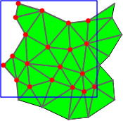
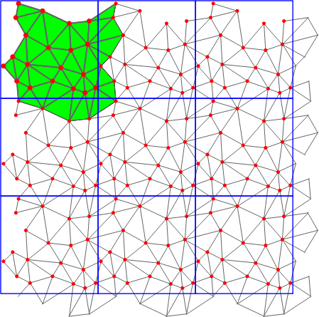

|
CGAL 4.13 - 2D Periodic Triangulations
|
|
CGAL 4.13 - 2D Periodic Triangulations
|
The periodic 2D-triangulation class of CGAL is designed to represent the triangulation of a set of points in the two-dimensional flat torus. The triangulation forms a partition of the space it is computed in. It is a simplicial complex, i.e. it contains all incident \( j\)-simplices ( \( j<k\)) of any \( k\)-simplex and two \( k\)-simplices either do not intersect or share a common \( j\)-face, \( j<k\). The occurring simplices of dimension up to two are called vertex, edge and face, respectively.
The 2D Periodic Triangulation package computes triangulations in the space \( \mathbb T_c^2\), which is defined as follows: Let \( c\in\mathbb R\setminus\{0\}\) and \( G\) be the group \( (c\cdot\mathbb Z^2, +)\), where \( c\cdot\mathbb Z\) denotes the set containing all integer multiples of \( c\). The flat torus is the quotient space: \( \mathbb T_c^2:=\mathbb R^2/G\). The parameter \( c\) defines the period.
The elements of \( \mathbb T_c^2\) are the equivalence classes of sets of points in \( \mathbb R^2\). We call these points representatives of an element of \( \mathbb T_c^2\). The implementation does not work directly on elements of \( \mathbb T_c^2\) but on some representatives in \( \mathbb R^2\). So there need to be distinguished representatives to work on. Given \( \alpha\) and \( \beta\), the square \( [\alpha,\alpha+c)\times[\beta,\beta+c)\) contains exactly one representative of each element in \( \mathbb T_c^2\). We call it original domain. From now on, when we talk about points, we generally mean representatives of elements of \( \mathbb T_c^2\) that lie inside the original domain. Note that any input point is required to be an element of the half-open square representing the original domain as defined above.
There are simplices containing points inside the original domain but also points outside it. The points outside the original domain are periodic copies of points inside the original domain. So, to specify a simplex we need points together with some additional information that determines the respective periodic copy of each point. The set of representatives of an element of \( \mathbb T_c^2\) is a square point grid. We address each representative by a two-dimensional integer vector \( (o_x,o_y)\), called offset. It represents the number of periods a representative in the original domain must be translated in \( x\)- and \( y\)-direction. The vector \( (0,0)\) corresponds to the representative in the original domain. To specify a \( k\)-simplex we need \( k+1\) point-offset pairs (cf. Fig. Figure 41.1).
A triangulation is a collection of vertices and faces that are linked together through incidence and adjacency relations. Each face gives access to its three incident vertices, their corresponding offsets, and to its three adjacent faces. Each vertex gives access to one of its incident faces.
The three vertices of a face are indexed with 0, 1 and 2 in positive orientation. The orientation of a simplex in \( \mathbb T_c^2\) is defined as the orientation of the corresponding simplex in \( \mathbb R^2\) given by representatives determined by the respective offsets (see Figure 41.2).
As in the underlying combinatorial triangulation (see Chapter Chapter_2D_Triangulation_Data_Structure), the neighbors of a faces are indexed with 0, 1 and 2 in such a way that the neighbor indexed by \( i\) is opposite to the vertex with the same index. Edges ( \( 1\)-faces) are not explicitly represented: an edge is given by a face and an index (the edge i of a face f is the edge of f that is opposite to the vertex with index i). See Figure 41.2.
Some point sets do not admit a triangulation in \( \mathbb T_c^2\). In this case we use 9 periodic copies of the point set arranged in a square of edge length \( 3c\). Any point set constructed in this way has a triangulation in \( \mathbb R^2/G'\) with \( G'=(3c\cdot\mathbb Z)^2\) [1]. So we compute the triangulation in this space, which is a 9-sheeted covering space of \( \mathbb T_c^2\) (see Figure 41.3).

|

|
The machinery that manages the copies is largely hidden from the user. However there are some effects that cannot be ignored. For example if the point set does not permit a triangulation in \( \mathbb T_c^2\) then the combinatorial iterators (Face_iterator, Edge_iterator and Vertex_iterator) return all simplices that are internally stored, which correspond to 9 periodic copies of each geometric primitive (Triangle, Segment, and Point). This is necessary to ensure consistency in the adjacency relations. In case it is desired to have only one periodic copy of each primitive, we provide geometric iterators. They return geometric primitives of the triangulation without relations between them. Another effect is that when the algorithm switches from 9-sheeted covering to 1-sheeted covering the Vertex_handles and Face_handles referencing deleted items becomes invalid.
In the data structure each vertex stores the input point it corresponds to. If we are computing in 9-sheeted covering space, each vertex stores the representative inside the original domain it corresponds to. So, the 9 vertices corresponding to the same element of \( \mathbb T_c^2\) all store the same representative in \( \mathbb R^2\), and not different periodic copies.
Validity
A periodic triangulation is said to be locally valid iff
(a)-(b) Its underlying combinatorial graph, the triangulation data structure, is locally valid (see Chapter Chapter_2D_Triangulation_Data_Structure)
(c) Any cell has its vertices ordered according to positive orientation. See Figure 41.2.
The class Periodic_2_Delaunay_triangulation_2 implements Delaunay triangulations of point sets in \( \mathbb T_c^2\).
Delaunay triangulations have the empty circle property, that is, the circumscribing circle of each face does not contain any other vertex of the triangulation in its interior. These triangulations are uniquely defined except in degenerate cases where four points are co-circular. Note however that the CGAL implementation computes a unique triangulation even in these cases [3].
This implementation is fully dynamic: it supports both insertions of points and vertex removal.
The class Periodic_2_triangulation_hierarchy_2 is the adaptation of the hierarchical structure described in Chapter Chapter_2D_Triangulations, Section The Triangulation Hierarchy to the periodic case.
The class Periodic_2_triangulation_hierarchy_2<Tr> inherits from the triangulation type passed as template parameter Tr. The insert, move, and remove member functions are overwritten to update the data structure at each operation. The locate queries are also overwritten to take advantage of the data structure for a fast processing.
We have chosen the prefix ``Periodic_2'' to emphasize that the triangulation is periodic in all two directions of space. There are also ``cylindrical'' periodicities where the triangulation is periodic only in one direction of the space.
The two main classes Periodic_2_Delaunay_triangulation_2 and Periodic_2_triangulation_2 provide high-level geometric functionality and are responsible for the geometric validity. Periodic_2_Delaunay_triangulation_2 contains all the functionality that is special to Delaunay triangulations, such as point insertion and vertex removal, the side-of-circle test, finding the conflicting region of a given point, dual functions etc. Periodic_2_triangulation_2 contains all the functionality that is common to triangulations in general, such as location of a point in the triangulation [4], access functions, geometric queries like the orientation test etc.
They are built as layers on top of a triangulation data structure, which stores their combinatorial structure. This separation between the geometry and the combinatorics is reflected in the software design by the fact that the triangulation classes take two template parameters:
Periodic_2TriangulationTraits_2 (for Periodic_2_triangulation_2) and Periodic_2DelaunayTriangulationTraits_2 (for Periodic_2_Delaunay_triangulation_2) in the reference manual andPeriodic_2TriangulationFaceBase_2 and Periodic_2TriangulationVertexBase_2 as template parameters.The first template parameter of the periodic triangulation class Periodic_2_triangulation_2<Traits, Tds> is the geometric traits class, described by the concept Periodic_2TriangulationTraits_2. Similar, the first template parameter of the Delaunay triangulation class Periodic_2_Delaunay_triangulation_2<Traits,Tds> is the geometric traits class, described by the concept Periodic_2DelaunayTriangulationTraits_2. These concepts are different from the TriangulationTraits_2 and DelaunayTriangulationTraits_2 (see chapter The Geometric Traits) in that they also implement all objects, predicates and constructions with using offsets.
The class Periodic_2_Delaunay_triangulation_traits_2<Traits,Periodic_2Offset_2> provides the required functionality. It expects two template parameters: A model of the concept DelaunayTriangulationTraits_2 and a model of the concept Periodic_2Offset_2. Since the concept TriangulationTraits_2 refines the concept DelaunayTriangulationTraits_2, the class Periodic_2_Delaunay_triangulation_traits_2<Traits,Periodic_2Offset_2> is also a model for the concept TriangulationTraits_2.
The kernels Cartesian, Homogeneous, Simple_cartesian, Simple_homogeneous and Filtered_kernel can all be used as
Traits. Periodic_2_triangulation_traits_2 provides exact predicates and exact constructions if Traits does. It provides exact predicates but not exact constructions if Filtered_kernel<CK> with CK an inexact kernel is used as its first template parameter. Using Exact_predicates_inexact_constructions_kernel as Traits provides fast and exact predicates and not exact constructions, using Exact_predicates_exact_constructions_kernel provides fast and exact predicates and exact constructions. The latter is recommended if the dual constructions and constructions of points, segments, triangles, and tetrahedra are used.The second parameter Periodic_2Offset_2 defaults to Periodic_2_offset_2.
The second template parameter of the main classes Periodic_2_triangulation_2 and Periodic_2_Delaunay_triangulation_2 is a triangulation data structure class. This class can be seen as a container for the faces and vertices maintaining incidence and adjacency relations (see Chapter Chapter_2D_Triangulation_Data_Structure). A model of this triangulation data structure is Triangulation_data_structure_2, and it is described by the TriangulationDataStructure_2 concept. This model is itself parameterized by a vertex base class and a face base class, which gives the possibility to customize the vertices and cells used by the triangulation data structure, and hence by the geometric triangulation using it. To represent periodic triangulations the cell base and vertex base classes need to meet the concepts Periodic_2TriangulationFaceBase_2 and Periodic_2TriangulationVertexBase_2.
A default value for the triangulation data structure parameter is provided in all the triangulation classes, so it does not need to be specified by the user unless he wants to use a different triangulation data structure or a different vertex or cell base class.
Periodic_2_triangulation_2 uses the TriangulationDataStructure_2 in essentially the same way as Triangulation_2. That is why the flexibility described in Software Design is applicable in exactly the same way. Also the classes Triangulation_vertex_base_with_info_2 and Triangulation_face_base_with_info_2 can be reused directly, see also Example Adding a color.
This example shows the incremental construction of a periodic 2D Delaunay triangulation, the location of a point and how to perform elementary operations on indices in a face. It uses the default parameter of the Periodic_2_Delaunay_triangulation_2 class for the triangulation data structure.
File Periodic_2_triangulation_2/p2t2_simple_example.cpp
The following two examples show how the user can plug his own vertex base in a triangulation. Changing the face base is similar.
If the user does not need to add a type in a vertex that depends on the TriangulationDataStructure_2 (e.g. a Vertex_handle or Face_handle), he can use the Triangulation_vertex_base_with_info_2 class to add his own information easily in the vertices. The example below shows how to add a CGAL::Color this way.
File Periodic_2_triangulation_2/p2t2_colored_vertices.cpp
If the user needs to add a type in a vertex that depends on the TriangulationDataStructure_2 (e.g. a Vertex_handle or Face_handle), he has to derive his own vertex base class, as the following example shows.
File Periodic_2_triangulation_2/p2t2_adding_handles.cpp
The user can check at any time whether a triangulation would be a simplicial complex in \( \mathbb T_c^2\) and force a conversion if so. However this should be done very carefully in order to be sure that the internal structure always remains a simplicial complex and thus a triangulation.
In this example we construct a triangulation that can be converted to the 1-sheeted covering. However, we can insert new points such that the point set does not have a Delaunay triangulation in the 1-sheeted covering anymore, so the triangulation is not extensible.
File Periodic_2_triangulation_2/p2t2_covering.cpp
For large point sets there are two optimizations available. Firstly, there is spatial sorting that sorts the input points according to a Hilbert curve, see chapter Spatial Sorting. The second one inserts 12 appropriately chosen dummy points to avoid the use of a 9-sheeted covering in the beginning. The 12 dummy points are deleted in the end. If the point set turns out to not have a Delaunay triangulation in 1-sheeted covering, the triangulation is converted to 9-sheeted covering during the removal of the 12 dummy points. This might take even longer than computing the triangulation without using this optimization. In general, uniformly distributed random point sets of more than 1000 points have a Delaunay triangulation in 1-sheeted covering.
It is recommended to run this example only when compiled in release mode because of the relatively large number of points.
File Periodic_2_triangulation_2/p2t2_large_point_set.cpp
There might be applications that need the geometric primitives of a triangulation as an input but do not require a simplicial complex. For these cases we provide the geometric iterators that return only the geometric primitives fulfilling some properties. In the following example we use the Periodic_triangle_iterator with the option UNIQUE_COVER_DOMAIN. This means that only those triangles are returned that have a non-empty intersection with the original domain of the 1-sheeted covering space, see Figure P2Triangulation2figgeom_iterators. The Periodic_triangle is actually a two-dimensional array of point-offset pairs. We check for all three entries of the periodic triangle whether the offset is (0,0,0) using the method is_null. If so, we convert the periodic triangle to a PK::Triangle_2, which requires exact constructions.
File Periodic_2_triangulation_2/p2t2_geometric_access.cpp
The performance of the 2D periodic Delaunay triangulation is compared to the Euclidean 2D Delaunay triangulation. The points are inserted in the Euclidean 2D Delaunay triangulation using spatial sorting. In the Periodic triangulation the points are first inserted in random order until the triangulation is valid in the 1 sheeted covering space. The remaining points are then inserted using spatial sorting. For the large point set, first dummy points are inserted to create a valid triangulation in the 1 sheeted covering space. Then all points are inserted using spatial sorting. As a final step, the dummy points are removed again.
The plot shows the running time in seconds for different numbers of batch inserted points. The points are uniformly randomly distributed in the unit rectangle. The tests were done on an Intel i7 @ 2.67GHz.
The periodic 2D-triangulation is based on the 2D triangulation package developed by Mariette Yvinec and inspired by the periodic 3D-triangulation package developed by Manuel Caroli and Monique Teillaud. The periodic 3D-triangulation package is described in Manuel's PhD thesis [2] Triangulating Point Sets in Orbit Spaces and [1].
In 2009, Nico Kruithof started implementation of the Periodic_2_triangulation_2 package.
 1.8.13
1.8.13